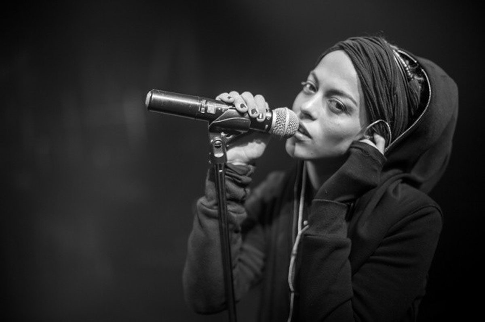
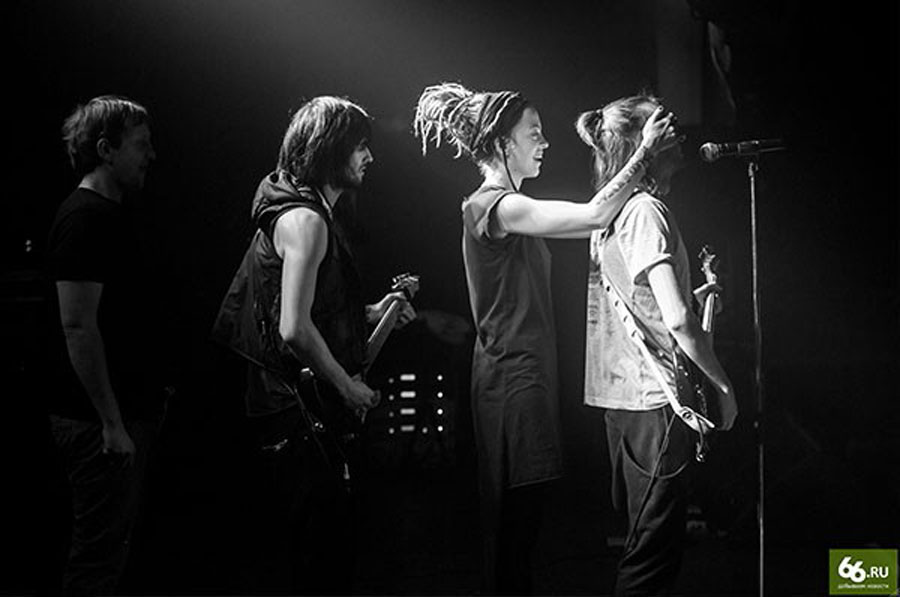
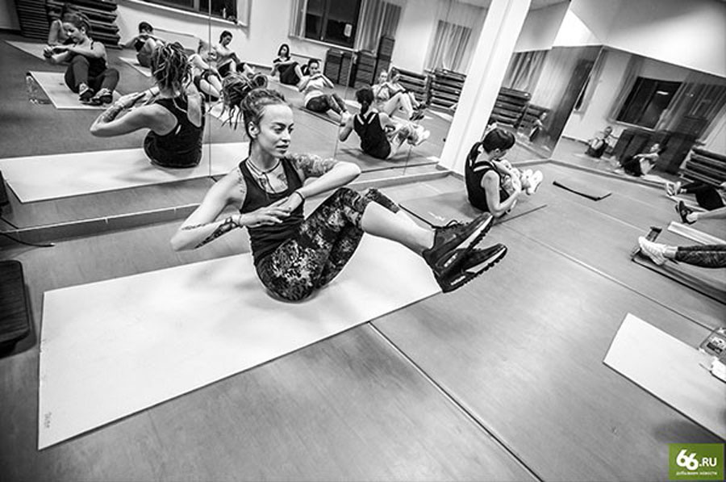
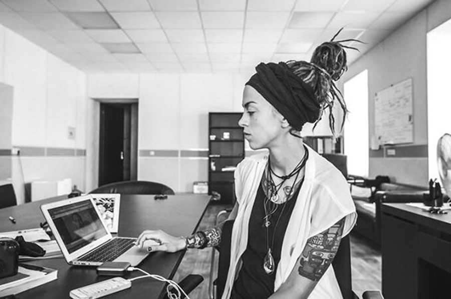

Ольга Маркес: «Моя #Sekta накрыла пол-России»
Основательница екатеринбургской инди-группы объясняет, как неуверенной в себе девочке из Ёбурга, которая делает нетоповую музыку «для своих», удается собирать полные залы.
И как за три года она создала фитнес-корпорацию со штатом в 300 человек и сетью филиалов в большинстве крупных городов России.
С Ольгой Маркес я столкнулся на Радищева. Она приехала из Питера, чтобы сыграть юбилейный концерт в «Телеклубе». Я предложил пойти попить кофе, поговорить, и лучше даже не о музыке. Сегодня уже кажется, что ее фитнес-школа #Sekta более популярна, чем группа. Тысячи людей занимаются дистанционно и очно. Становятся красивей, меняют тело, меняют привычки, меняются сами — делаются лучше. Они будто принадлежат тайному обществу, какому-то «бойцовскому клубу». Помимо того, #Sekta, очевидно, успешный бизнес-проект. Пить кофе и разговаривать Ольга согласилась — как раз было время до записи очередного видео о невероятном (правда невероятном, я видел фотки «до и после») преображении одной из ее учениц.
— Ваша музыка — это музыка для своих, для тех, кто в теме. Вы живете в своем, параллельном мире, вне законов шоу-бизнеса, диктата продюсеров и больших денег… И тебе удалось добиться успеха вне системы. Последние несколько лет вы собираете большие залы и в Москве, и в Питере, и в других крупных городах. Без без какой-либо медиаподдержки… В общем, я хочу услышать твою контр историю успеха.
— Это отличный вопрос! Я преклоняюсь перед этим вопросом. Когда я была подростком, я на полке в гостиной у кого-то в гостях нашла книгу, на которой было написано «Дао» чего-то там…
— «Дао Пятачка» какое-нибудь?
— Да, именно эта книга! Я не хотела говорить, потому что думала, что ты надо мной посмеешься! Что такое дао, я, конечно, не знала. Я открыла книгу и ни хрена не поняла. Подумала, что это какое-то унылое психологическое говно. Сейчас я понимаю, что такое дао. Многие люди пытаются руководствоваться каким-то правилами. Правилами бизнеса, правилами успеха. Но у них нет внутри того, что есть у по-настоящему успешного человека. Они не ценят опыт, который приходит к ним, пока они идут по этому пути. Ну а я… я просто работала со своими недостатками.
— У тебя есть своя технология минимизации недостатков?
— Я объясню на примере музыки, потому что это то, с чего все началось. У меня был жесткий вектор: я хотела стать журналистом. Я умею писать — это то, что я люблю. Так родилась моя музыка, мои тексты. Сначала я относилась к этому настороженно. Я знала, что, если буду заниматься несколькими вещами одновременно, то у меня ничего не получится. Но потом люди стали просить устроить концерт… В чем большая ошибка многих начинающих музыкантов? Они записали одну песню и начинают ее везде совать. А просто оставить, дать этому полежать и посмотреть, попросит ли тебя кто-нибудь спеть это или нет, зацепит это кого-нибудь или нет, никто не может.
— Давай я выскажу одну гипотезу на тему твоей популярности. Если бы, например, Alai Oli зазвучала на «Русском радио», то тогда армия твоих поклонников восприняла бы это как предательство. Если вы попадете в мейнстрим, то это просто убьет вас. А так — все на своих местах.
— Мне кажется, ты не совсем правильно представляешь себе нашу аудиторию. В основном нашей аудитории на нас насрать. Они не мониторят наши фан-страницы. Они просто слушают песни, четко отделяя их от моей личности. Это та публика, которая ближе ко мне по возрасту, по мышлению. На каком-то этапе их жизни эти песни стали для них определяющими. И они до сих пор приходят на концерт, чтобы услышать их. Им не важно, где еще они звучат, чем я занимаюсь… Они верны музыке. Как в фильме про Пенни Лейн — «Мы здесь из-за музыки».
— Моя семилетняя дочь постоянно слушает твои песни и заставляет меня ставить их в машине.
— Ну, ей точно будет все равно, будем мы звучать на «Русском радио» или нет!
— Да, ей все равно.
— Сейчас для музыкантов не важно, сколько дисков ты продал. Главное — сколько зрителей ты собрал на последнем шоу. И это такой нервяк для всех. Это целая индустрия, где люди вынуждены ездить в бесконечные туры. Чаще всего это связано с ужасными условиями. Все эти наши поезда, холод, гостиницы…
— Ты на поездах ездишь?
— Сейчас уже нет. Благодаря тому что мы занимаемся чем-то еще, у нас появилась возможность не рассматривать музыку как источник заработка. Как это было сначала.
— По-моему, заработать музыкой сейчас вообще невозможно.
— Нет, это возможно.
— Ну сколько вы зарабатывали?
— В год мы зарабатывали примерно по полмиллиона на человека. Притом что делили все поровну между музыкантами и концертным директором. То есть на семерых. Потом настал момент, когда материальная сторона для нас стала очень важной, и мы стали брать трубача только на самые большие концерты. Потому что были вынуждены экономить…
— Вы давали концерты каждый день?
— Каждый день или каждые два дня. Это, кстати, очень подкосило мою любовь к музыке.
— В какой момент ты поняла, что больше не можешь?
— Когда я была беременна, месяце на пятом примерно, силы мои закончились. Но еще месяца до восьмого мы выступали. У меня был лютый токсикоз. В каждом городе меня тошнило. Но у нас был тур на 30 городов, и я шла и выступала. Потому что один из пунктов моего дао заключается в том, что, если люди на тебя рассчитывают, то нужно идти и работать. Уже потом я сказала: ребята, сейчас будет меньше концертов, а потом еще меньше…
— Ты рада, что уехала из Ёбурга?
— Да, это полностью изменило мою жизнь. На самом деле я не хотела уезжать… Мне было здесь очень хорошо. Я закончила университет и сорвалась, даже не получив диплом. Даже на выпускной не пошла. Это был мой последний рубеж.
— Для того чтобы развиваться, нужно выйти из комфортной среды. Это еще один пункт моего дао. Отъезд из Екатеринбурга для меня стал выходом из моей комфортной среды. Здесь я всегда знала, где и как могу работать. Я знала здесь много людей, и мне было легко. Когда я приехала в Питер, у меня ничего этого не было. Ни денег, ни друзей, ни связей. Это был такой крутой урок. Я попросила своего знакомого, Рому Любомирова, разрешить мне преподавать йогу в его школе танцев. Я зарабатывала небольшие деньги, ну и таким образом кормила ребят из группы. Покупала еду, потому что нам было нечего есть. Мы ссорились из-за овощей! Тогда у меня не было уверенности, что группа будет зарабатывать какие-то деньги. Потом мы стали зарабатывать музыкой. Я, например могла позволить себе поехать в Тай, купить макбук… Но ни-ког-да! Never! не смогла бы купить себе квартиру. Ну разве что в какую-нибудь адскую ипотеку, из которой я вообще никогда не вылезу. А я не хочу этого.
— Зачем продолжать жить в промозглом Питере, если можно переехать в Барселону, о который ты так много поёшь?
— Я люблю работать. У меня в Питере, примерно напротив штаб-квартиры «ВКонтакте» есть офис, на последнем этаже, с видом на Спас. Там сидят люди, которых я привезла из разных городов. И мы все занимаемся делом, от которого нас прёт… Поэтому мне не нужно покупать домик в Испании. Лучше я его сниму на пару месяцев. Насладившись этим, я поеду в другое место, чтобы потом, годам к 50, когда я захочу где-то осесть и написать что-то большое, точно знать, где мне нравится, а где нет. За последний год я побывала на Кубе, объездила всю Европу, но меня там ни от чего не пёрло. Зато когда я приехала в Стамбул, то просто охренела. Это мой город! Он сразу же схапал мое сердце!
— В Таиланде ты сделала красивый видеоролик, где ты на пляже, во время восхода солнца, занимаешься йогой под песню Ланы дель Рей. Йога для тебя стала спасением от наркомании?
— Никогда йога не может быть спасением от наркомании. Спасением для меня стали 12 шагов анонимных наркоманов. У меня с собой всегда есть тетрадочка, в которую я записываю все свои шаги. Сейчас — четвертый. Пройти программу полностью невозможно. В ней надо быть, чтобы чувствовать себя хорошо… Моя проблема в том, что я сразу начинала употреблять так много, что могла умереть. Мой муж мог долго торчать, и об этом никто не знал. А я не могу, это сразу днище! Поэтому не было такого, что я много лет употребляла наркотики, но я употребляла достаточно жестко, и мне нужна была помощь. Я рада, что меня научили конструктивно подходить к чувствам, которые раньше как творческого человека меня захватывали, разрушали, лишали меня возможности жить. Мне это было нужно для того, чтобы максимально реализовываться и, что самое главное, быть полезной. Потом я стала этим делиться…
— Но этим же все могло и закончиться. И «Секта» могла не получиться.
— Это начало любой истории… Моей задачей стало дать человеку почувствовать что-то внутри. Показать человеку внутреннее содержание, смысл, при этом не затаскивая его в этот мир. То, что во мне открывает новые силы и вызывает вдохновение, я взяла впоследствии в свою систему в «Секте».
— Могу предположить, что психологические надстройки, которые отвечают за самодисциплину, за самопреодоление, за весь этот «don’t fuck up», ты взяла из 12-шаговой программы.
— Конечно, что-то переняла. Человек, который попал в «Секту», должен пережить кризисную неделю. Иначе он не достигнет своей цели. Я считаю, что это большая несправедливость, что люди, которые не торчали, не могут воспользоваться опытом сообщества.
— Сколько человек работают на «Секту»?
— Только кураторов несколько сотен, наверное, 300.
— Это твои ученики?
— По-разному. Я чувствую себя как Стив Джобс, который ходил в университеты и выискивал самых крутых ребят. Людей, которые хотят отдавать, всегда видно. Они самые яркие. Их всегда можно взять и обучить.
— Ты не собираешься тиражировать свой опыт, продавая франшизу?
— Когда нам предлагают продать франшизу, я понимаю, что человек просто хочет денег сделать. А их там не сделать. Вернее, можно сделать, но тогда это будет уже не моя концепция. Другое дело, когда стажер прошел полный курс, потом попросился в команду. Мы его обучили, и он понял, что хочет заниматься этим всю жизнь. Проходит время, и люди со слезами на глазах начинают ему писать, что он помог им изменить их жизнь и полюбить себя. Это самый благородный труд, который я могу найти для себя в этой жизни… Если потом он решает открыть филиал, то мы не возражаем.
— То есть это уже не франшиза?
— У нас все централизованно. Мы платим зарплаты, оплачиваем аренды.
— Мне нравится идея, что человек может заниматься дистанционно. Достаточно просто заплатить и получить пароль. Вы это сами придумали или эта идея была у вас перед глазами, когда вы начинали этим заниматься?
— Может быть, кто-то, конечно, это и делал, но в то время мы изобретали велосипед. У меня такое ощущение, что мы жили на другой планете, когда все это придумали. Поэтому даже такие элементарные вещи, как сайт, дизайн, были для нас очень сложными. Мы даже все заявки принимали по телефону. Потом мы перешли на заявки «ВКонтакте». Это тоже было сложно. Потом сделали форму на сайте. Сейчас, когда мне говорят, что кто-то хочет украсть нашу программу, то я просто ржу.
— Почему?
— Это же не просто — получил доступ, и все. В чате сидят люди, в которых заложено столько информации! У нас есть специальный портал для кураторов, в котором собраны миллионы статей, учебных кейсов по работе в «Секте». Мы разработали специальную программу для женщин с высокой массой тела, для мужчин, отдельно для кормящих матерей… Во главе всего этого стоят ученые, которые понимают гораздо больше, чем я. У нас есть целый научный отдел. Там работают специалисты из Швеции, из Германии, доктора наук.
— То есть ты хочешь сказать, что с 2011 года ты построила такую мегакорпорацию?
— Да, но никто не знает об этом. Если все узнают, то начнут завидовать (смеется).
— И какой у мегакорпорации месячный оборот?
— Ну, не знаю. Наверное, около десяти.
— 10 млн рублей? Ну, это немного. Надо больше.
— Для того чтобы больше и качественно работать, надо обучать больше людей. Это невозможно сделать быстро, это же не штамповка. Каждый куратор — это человеческий ресурс. К нам приходят инвесторы, предлагают миллионы долларов. Предлагают поставить все на поток. Но они не представляют, о чем говорят. Сообщество растет постепенно.
— Твоя роль в администрировании какова?
— У меня есть люди, которые занимаются каждым конкретным направлением. Раньше мне приходилось это делать самой, и это было реально сложно. Есть финансово-юридический отдел. В этом я полный ноль. Вот ты спросил, сколько у нас оборот. Я за этими делами как-то даже не особо слежу. Мне интересны два момента: заплачена ли аренда, заплачена ли зарплата.
— Ты не боишься, что в определенный момент «Секту» могут просто увести? То есть ты перестанешь быть нужной.
— Если она будет жить отдельно и отлично функционировать, то это будет тот момент, когда я начну развиваться в другой сфере. Я сейчас делаю магазин, он тоже великолепен. Я от этого детища без ума.
— Откуда у тебя время, чтобы писать песни?
— В последний раз я пришла домой после тяжелого дня, взяла гитару и написала песню. Для того чтобы написать песню, не нужно много времени. Нужна сосредоточенность. Я знаю, что убьет творчество в наш век — его убьют гаджеты и соцсети. Потому что когда твое внимание постоянно где-то находится, то для творчества не остается пространства.
— То есть нужно просто перестать потреблять контент?
— Нужно остановиться… У меня же была проблема — графомания. У нас так много песен, что мы даже за три концерта не сможем их все спеть.
— Когда новый альбом?
— Я хочу сейчас взять и записать новый альбом разом, и чтобы все его услышали в этот момент, а не так, чтобы на концертах петь, а потом записать. И записать я его хочу в Европе, потому что мы можем себе это позволить. Просто сменить атмосферу. У меня никогда не было возможности выбирать что-то крутое, мы выбирали то, что вселенная посылала. Но мне не хватило киношности в жизни. Мне хочется почувствовать себя рок-звездой. Изначально «Секта» была бесплатная и нафиг никому не была нужна. Как только люди стали за нее платить деньги, ее стали ценить. Так же и здесь. Если я заплачу за альбом лям, то я буду петь так, как будто я заплатила лям. Это внутри меня мотивирует.
— А как его продать?
— Не хочу вообще никогда просить, продавать, пускай люди ходят на концерты, ну в «айтюнсе» качают.
— Сколько тебе лет?
27.
— У меня много знакомых такого возраста или чуть помоложе. Чем больше я за ними наблюдаю, тем больше мне кажется, что многие чувствуют себя временщиками в своем деле. Они рассуждают так: вот еще немного я тут поработаю, а послезавтра буду на одной яхте с Абрамовичем или буду давать концерт в Кремле. Они стремаются своей работы, медиа им вдалбливает, что «надо помодней». В итоге свое дело они делают плохо, потому что они тут временно.
— Это разрушительные мысли. Если ты научишься любить свое дело и будешь им заниматься с любовью и с головой, тебя в любом случае ждет успех. Рано или поздно. Труд, дисциплина и ответственность. Это главные части дао. Как бы банально это ни звучало. Еще ты должен понимать, зачем тебе это все. Какова цель.
Работа не должна быть бездумной, над телом в том числе. Как только ты начинаешь понимать, каким ты хочешь стать человеком, это начинает тебе помогать. Но это не значит, что ты должен стараться стать хорошим человеком. Находя свои болезненные точки, слабости, ты не должен отстегнуть их от себя. Ты должен понять, что ты за человек. Принять все стороны своего характера и иметь их в виду, когда ты сталкиваешься с определенными событиями.
Я не очень хорошая певица, но я учусь. Я несовершенна, и мне есть над чем работать. Я знаю, что я обидчивый человек. И когда меня кто-то обижает, я знаю, что это не в нем проблема. Это я обидчивый человек. И это моя проблема.
Фото: Kristina Kis.